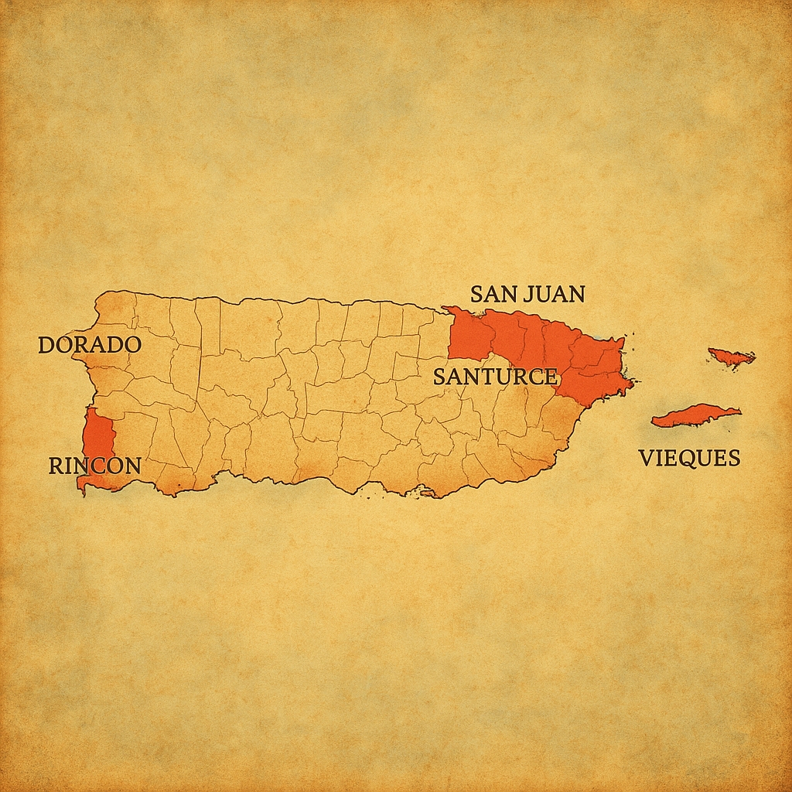
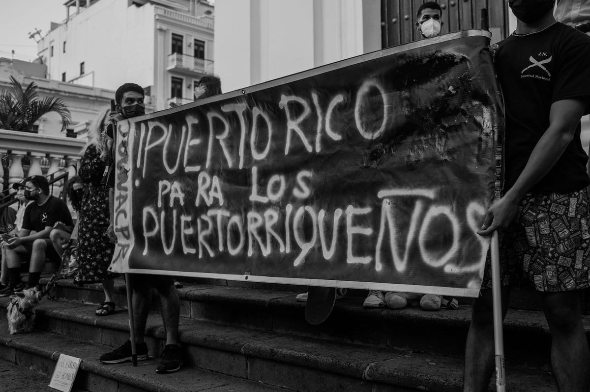

¿Alguna vez has escuchado la frase "Las playas son del pueblo"?
"La gentrificación en Puerto Rico duele porque no solo cambia nuestros paisajes, cambia quiénes somos"
'Puerto Rico tiene un problema'
a frase "Las playas son del pueblo" comenzó a popularizarse hace unos años, naciendo de un sentimiento de profunda frustración. Compañías privadas empezaron a adquirir terrenos cercanos a las costas de Puerto Rico y, aprovechando vacíos legales, lograron privatizar algunas playas, violando nuestros derechos ciudadanos. Este problema no se limita a las playas; la gentrificación se ha extendido a zonas urbanas, como Santurce y el Viejo San Juan, trayendo consecuencias devastadoras para muchas familias puertorriqueñas. La gentrificación en Puerto Rico ocurre cuando personas ricas, a menudo del extranjero, compran propiedades en áreas tradicionalmente habitadas por locales con menos recursos. Esto eleva los precios de viviendas y alquileres, obligando a muchos puertorriqueños a mudarse porque ya no pueden costear vivir allí. Además, los negocios locales son reemplazados por cafés, hoteles o boutiques más caros, lo que poco a poco hace que las comunidades pierdan su identidad y cultura original. Aunque algunos argumentan que este desarrollo trae mejoras como calles arregladas o mayor seguridad, no siempre beneficia a quienes vivían allí antes.
'Tierra de nadie'
Las zonas más gentrificadas de Puerto Rico son el Viejo San Juan, Santurce, Rincón,Dorado y las islas de Vieques y Culebra. Sin embargo, este problema sigue expandiéndose a través de la isla.
'¿Qué opinan los boricuas?'
Conoce la historia de Jerome Zayas, un puertorriqueño que, junto a su hijo Ayan, ha tenido que mudarse en tres ocasiones distintas debido al crecimiento de las viviendas a corto plazo en el área, o los "Airbnb". A sus 33 años, ya se ha tenido que mudar tres veces de comunidades en las que antes vivían familias humildes (La Perla y Puerta de Tierra). Estas zonas ya no están diseñadas para puertorriqueños, sino para turistas.
“Puerto Rico for Puerto Ricans” written on a banner at a protest against gentrification in San Juan. Photo credit: Adriana De Jesús Salamán / Twitter
'Resiliencia'
En el corazón de San Juan, un grupo de vecinos se niega a ser desplazados."Los de Puerta de Tierra"son Una alianza de colectivos como la Brigada Puerta de Tierra y Puerta de Tierra No Se Vende,luchan por proteger su comunidad,su historia y su derecho a permanecer.Con proyectos autogestionados y acciones directas, están demostrando que la resistencia también se construye desde el barrio.Una de sus portavoces es la abogada y activista Laura Mía González, quien ha sido testigo de los cambios en el barrio. El grupo se ha dedicado a denunciar las invasiones de terreno y a luchar contra el desplazamiento de los residentes.